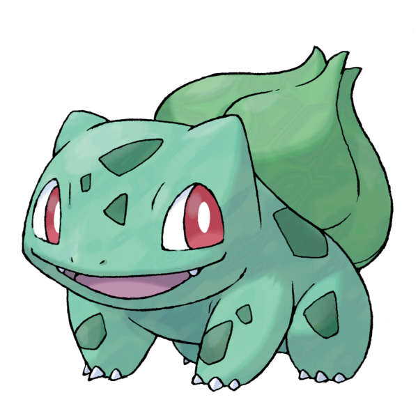
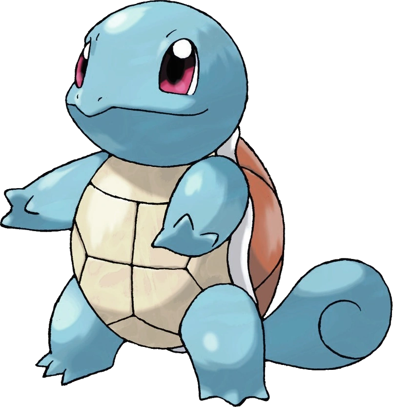

OS INICIAIS
Uma das escolhas mais importantes de um mestre Pokémon é quem será seu inicial, o primeiro monstrinho que será o principal acompanhante durante sua jornada.
Em toda região dos jogos e animes da franquia Pokémon é sempre possível escolher entre três monstrinhos, um do tipo Água, Grama ou Fogo – e a cada novo jogo sempre existe uma grande antecipação para saber qual o novo trio.
1ª Geração - Kanto

Bulbasaur
Um pequeno Pokémon anfíbio quadrúpede que possui pele azul esverdeada com manchas mais escuras.

Charmander
Um Pokémon reptiliano bípede com corpo principalmente laranja e olhos azuis.

Squirtle
Um pequeno Pokémon reptiliano que se assemelha a uma tartaruga azul clara.